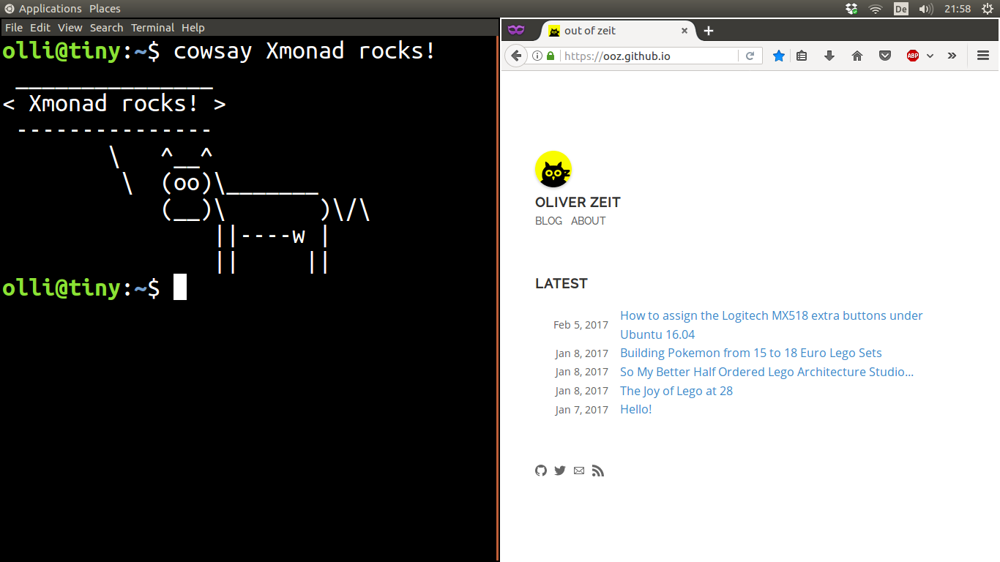

In the last six months I must have set up my default Ubuntu 16.04 + Xmonad desktop environment on like four or more machines. The goal looks like this (I like to have the top bar for status and widgets):

Here is a small guide for future reference:
Install the Xmonad package:
sudo apt install xmonadAt this point you can already select an Xmonad session at the login screen. But this is not recommended.
So additionally you should install the gnome-session-xmonad package:
sudo add-apt-repository ppa:gekkio/xmonad
sudo apt-get update
sudo apt-get install gnome-session-xmonadConfigure Xmonad. The Xmonad configuration is written in Haskell. If you are uncertain or need something working to start from, you are free to take my configuration. Place it here: ~/.xmonad/xmonad.hs
Relog and choose the GNOME + XMonad session at the login screen.
If you dislike the bottom panel (like I do, see above screenshot), you can disable it with:
dconf write /org/gnome/gnome-panel/layout/toplevel-id-list "['top-panel']"
To redisplay it, execute:
dconf write /org/gnome/gnome-panel/layout/toplevel-id-list "['top-panel','bottom-panel']"Have fun!
The above guide also works for Ubuntu 18.04 and 20.04. However, for version 20.04 further tweaks are needed:
The shortcut is claimed by GNOME and needs to be disabled in "Settings > Keyboard Shortcuts > Switch to next input source"
sudo apt install gnome-shell-extension-pixelsaver
gnome-extensions enable pixel-saver@deadalnix.me
gsettings set org.gnome.Terminal.Legacy.Settings headerbar falseInspired by: https://askubuntu.com/questions/1230877/how-to-remove-home-folder-icon-from-desktop-in-ubuntu-20-04 (the keys however don't work for GNOME + XMonad session). Correct key:
gsettings set org.gnome.gnome-flashback.desktop show-icons falseIt's called 'Yaru-dark' (default is 'Yaru', a light theme) and can be set under org.gnome.desktop.interface.gtk-theme.